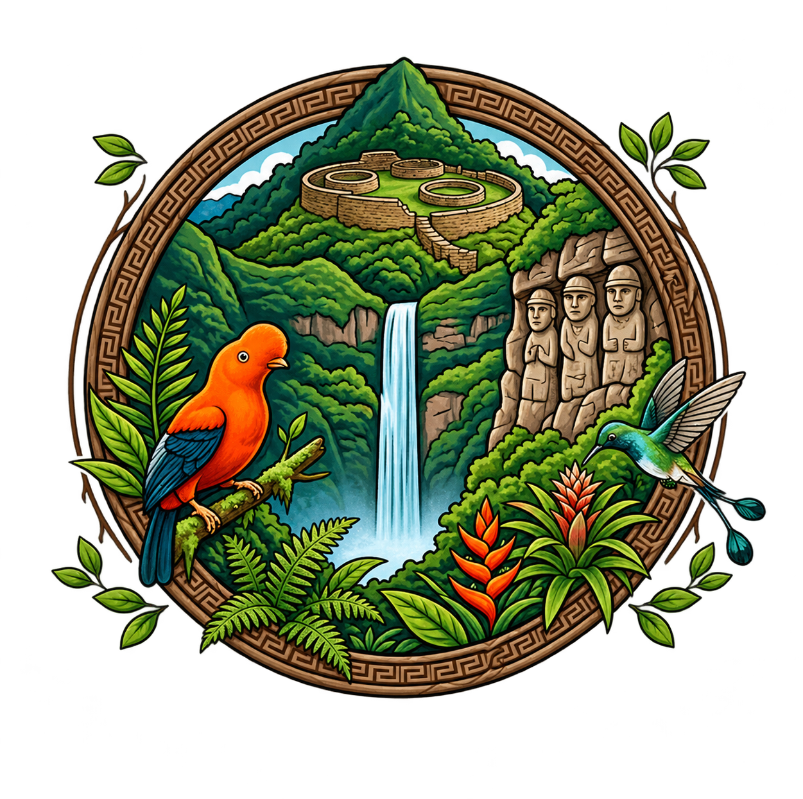

↗
↗
Kuélap: una mirada a nuestro pasado
Acércate al legado de una de las expresiones arqueológicas más emblemáticas de Amazonas.
Descubrir historia →
AMAZONAS · PERÚ
Un viaje por las raíces, las voces y la extraordinaria riqueza natural y cultural de nuestra región.
MÁS QUE UN DESTINO
Amazonas Voces y Raíces es un espacio para descubrir y valorar la identidad de nuestra región. Compartimos relatos, lugares, costumbres y conocimientos que nos acercan a la riqueza del Perú y a las comunidades que mantienen vivas sus tradiciones.
Leer nuestras historias ↗DESCUBRE AMAZONAS
Desde paisajes que asombran hasta expresiones culturales que cuentan quiénes somos.
EL BLOG
Ideas, lugares y costumbres para mirar Amazonas con nuevos ojos.
↗
Acércate al legado de una de las expresiones arqueológicas más emblemáticas de Amazonas.
Descubrir historia → ↗
↗
Las costumbres, los saberes y la creatividad que pasan de generación en generación.
Descubrir historia → ↗
↗
Un recorrido por los paisajes y la biodiversidad que hacen única a nuestra región.
Descubrir historia →No encontramos historias con esa búsqueda. Prueba con otra palabra.
Estas publicaciones son ejemplos iniciales. Sustituye los textos e imágenes por contenido propio y fuentes verificadas.
Conocer nuestras raíces es una forma de cuidar lo que somos y construir lo que queremos ser.
AMAZONAS VOCES Y RAÍCES
POSTALES DE NUESTRA TIERRA
Una pequeña ventana a los paisajes, colores y momentos de nuestra región.
Selecciona una fotografía para verla ampliada. Las imágenes son ilustrativas; verifica su pertinencia antes de publicar.
SUMEMOS VOCES
Nos encantaría conocer tus ideas, recuerdos y propuestas para seguir compartiendo la riqueza de Amazonas.
ESCRÍBENOS
amazonasvocesyraices@gmail.com